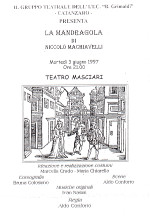

Opera scritta nel più intenso periodo creativo del Machiavelli, La Mandragola fu fatta rappresentare per la prima volta nel Carnevale del 1526 a Modena dal Guicciardini, governatore delle Romagne. La Mandragola è stata vista come un'opera aggressiva in cui il Machiavelli pone in arte la sua maldicenza, non risparmiando sentenze e massime com'è nel suo costume, volendo trarre, dai comportamenti e dalle esperienze, norme che servano a migliorare la società e lo Stato. I tipi messi in scena sono esemplari di una umanità gaglioffa offerti senza indulgenza e simpatia al "badalucco" degli spettatori. Machiavelli parte dalla realtà effettuale per descriverla in tutti i suoi aspetti anche i più negativi: il clero corrotto e corruttibile, i ricchi sciocchi e frivoli, i borghesi arroganti e prepotenti. La vicenda raccoglie suggestioni di popolari credenze intorno alle virtù magiche dell'erba che dà il titolo alla commedia nella cui architettura si intrecciano due strutture: quella amorosa e quella della beffa. I personaggi: Messer Nicia, Callimaco, Ligurio, Fra Timoteo, Sostrata preparano il colpo di scena che avviene quando Lucrezia, vinta dall'ardore giovanile di Callimaco, muove le fila dell'azione, con la piena coscienza dell'inganno e rivela la sua personalità "machiavellica". Le sue parole a Callimaco, mentre gettano una luce gelida su tutti i personaggi, riscattano, nell'unico modo possibile, la vicenda: dalla ribalda società cinquecentesca, dalla stoltezza e dall'inganno, i diritti della sua bellezza e della sua gioventù avvilita hanno l'occasione di affermarsi. Lucrezia conosce l'amore e da vittima diviene carnefice. Non è malvagia, ma lo diventa nel fronteggiare gli ostacoli della vita; il male per lei diventa una necessità. L'opera è stata scelta seguendo questa chiave di lettura: dedurre dagli esempi negativi, anche se a volte concorrono al raggiungimento del proprio scopo e per questo possono apparire positivi, l'insegnamento che il bene è, sempre e comunque, il fine ultimo da perseguire se non si vuole che i fatti creino persone malvagie. Nel Cinquecento, nella cultura popolare, erano particolari il modo di intendere la parodia ed il ruolo assegnato al riso ed alla comicità. Tali caratteristiche trovavano la piena espressione nelle feste carnevalesche dove le strade principali e le piazze si trasformavano in palcoscenico e gli abitanti in attori e spettatori. Tenuto conto di questa concezione dell'arte, I 'opera è stata ambientata in una piazza di Firenze dove non esiste distinzione tra attori e spettatori perché tutti partecipano attivamente alla scena. Il linguaggio della Commedia alcune volte scurrile, e diremo boccaccesco, acquista maggior pregio se visto come salutare valvola di sfogo, utile a consentire alla vita di svolgersi normalmente ed il ricorso alla Commedia dell 'arte è una scelta consapevole che mostra come un testo scritto nel Cinquecento ben si presta a questa forma di rappresentazione. Il gruppo teatrale dell'I. T. C. ”B. Grimaldi". gestisce un laboratorio teatrale fin dal 1987 con la partecipazione di allievi e docenti. In questi anni sono stati organizzati diversi spettacoli e varie iniziative tra cui:
{kind=link}
- Ribalta artistica.
- Premio lettura poesie autori moderni.
- Seminari sul teatro-azione e sull'importanza della psicotecnica teatrale come momento di educazione alla salute.
- Corsi di dizione e impostazione della voce.
- Rappresentazione dell'opera "Lisistrata" di Aristofane che ha ottenuto il Premio speciale per la migliore regia alla Rassegna regionale di teatro nella scuola svoltasi a Crotone nel 1995. La commedia è stata replicata al Teatro Masciari con notevole successo di pubblico e di critica
- Rappresentazione al Teatro Masciari dell'opera "Il borghese gentiluomo" di Molière, andata in scena più volte, anche per conto dell'Amministrazione comunale di Catanzaro che ha voluto inserirla nelle manifestazioni dell'Estate Catanzarese. Lo spettacolo è stato replicato il 27.04-97 alla Rassegna nazionale del teatro scuola svoltasi a Serra S. Quirico (AN), con positive recensioni della critica e della stampa.. ( Il Coordinamento C.I.C. )
- Callimaco ( Marco Trebian )
- Messer Nicia ( Francesco Donato )
- Siro ( Antonio Talarico )
- Ligurio ( Alessandro Perri )
- Lucrezia ( Helen Mazzoleni )
- Sostrata ( Lucia Cristofaro )
- Frate Timoteo ( Domenico Chiarella )
- Due donne ( Monica Corea , Daniela Rizzica )
- Il popolo, il giullare e la cantante ( Armando Cammisecra , Marco Carbone , Aurora Catania , Paola De Fazio , Angelo Ianniello , Paola Martino , Francesco Russo , Irene Spina )
- Ideazione e realizzazione costumi ( Marcella Crudo , Marta Chiarella )
- Coreografie ( Bruna Colosimo )
- Scene ( Aldo Conforto )
- Regia ( Aldo Conforto )